| 日付 | 2023年6月4日（日） |
|---|---|
| 山域 | 南アルプス |
| メンバー | 家族（妻） |
| 山行形態 | 日帰り |
| アクセス | 車 |
| ルート (Map) | 杖突峠駐車場 (8:16) - (8:46) 水吞場広場 - (9:29) 守屋山東峰 (9:42) - (10:03) 守屋山西峰 (11:04) - (11:24) 守屋山東峰 - (11:46) 浅間の滝 - (12:27) 立石コース入口 - (12:44) 杖突峠駐車場 |
台風一過の晴天の週末。
西側は特に安定して好天が期待できそうなため、
長野県の守屋山に行ってみることにする。
杖突峠の駐車場に車を停める。標高1240m。
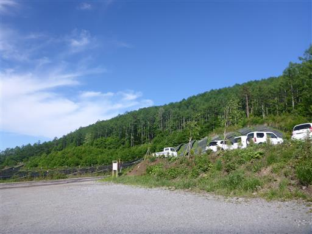
水吞場広場の注意事項が記載されているが、水吞場広場がどこを指すのかが良く分からない。
この場所に車を停めてはいけないということではないと思うが…
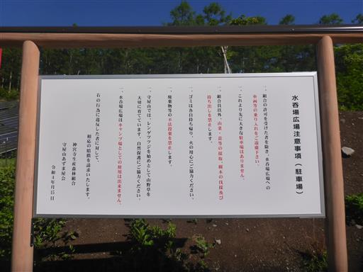
駐車場の裏が登山口だ。
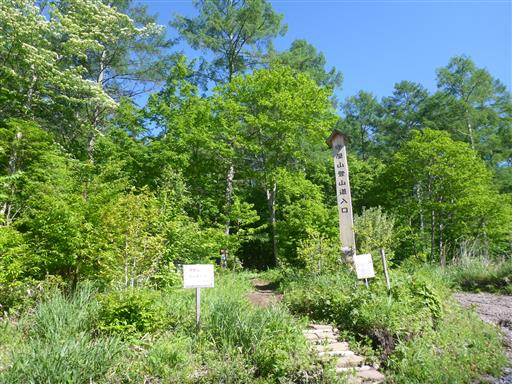
まだ若干淡い緑色の森の中を登って行く。
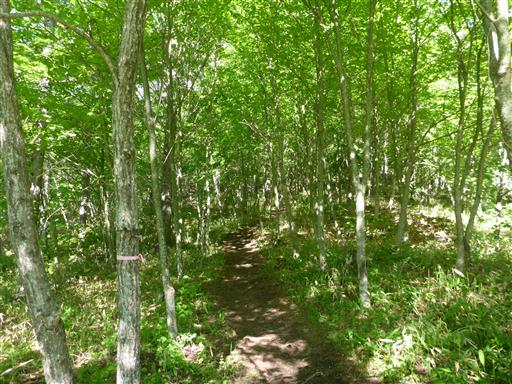
標識は完備されている。
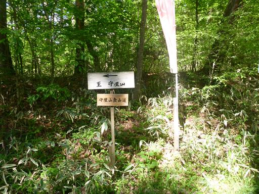
登山道から見えていた林道に出てくる。
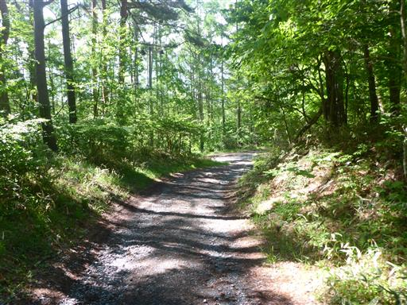
林道をしばらく歩いたら、再び登山道へ。

ところどころにレンゲツツジの花が咲いている。
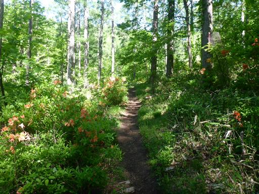
小さな沢を渡る。昨日の雨の影響か水は少し濁っている。
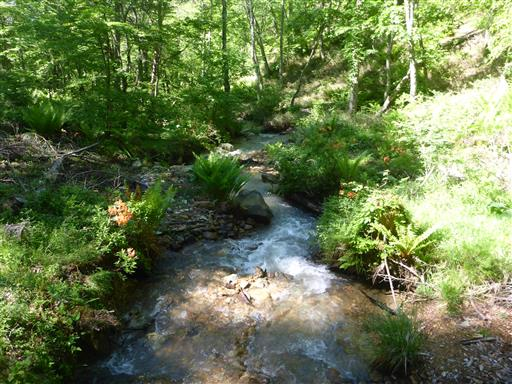
ここだけ木道が整備されている。地面がぬかるんでいるのだろうか？
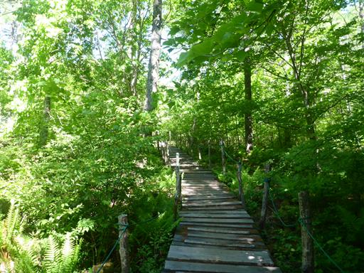
広場に出てくる。どうやらここが水吞場広場のようだ。
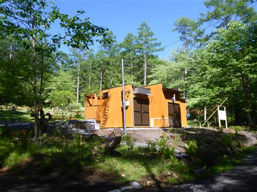
広場の一角にある守屋山諏訪社。小さな社だ。
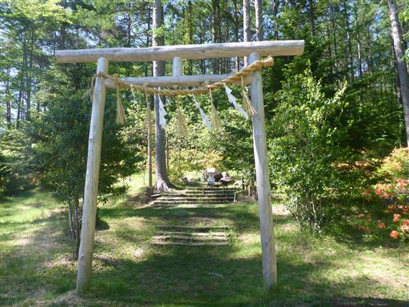
クマ出没注意と書かれたクマ…
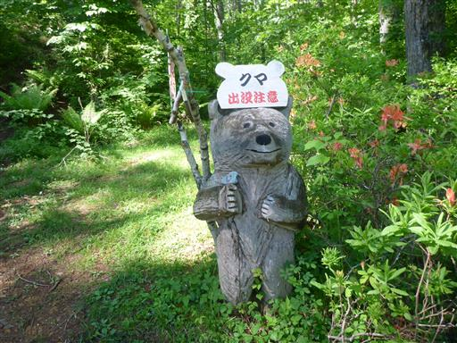
美しい樹林帯。登山口からずっとハルゼミの鳴き声が響き渡っている。
ところどころでカッコウやウグイスの声も聞こえる。
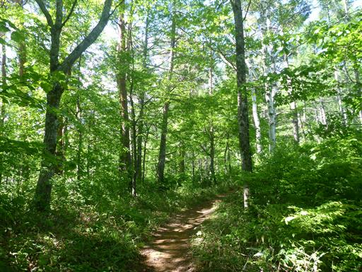
胸突坂。
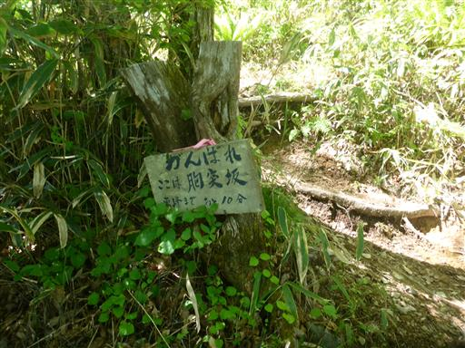
大した坂ではない。この山は全体的に傾斜が緩やかで、非常に歩きやすい。
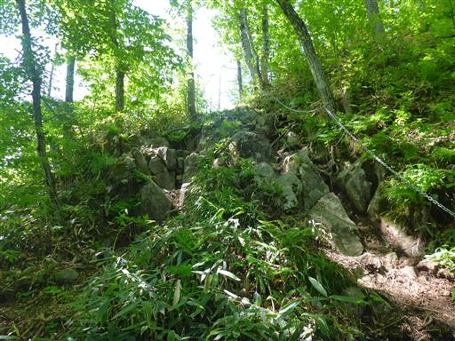
分岐点に到着。左から登って来て、帰りは右の道を下る予定だ。
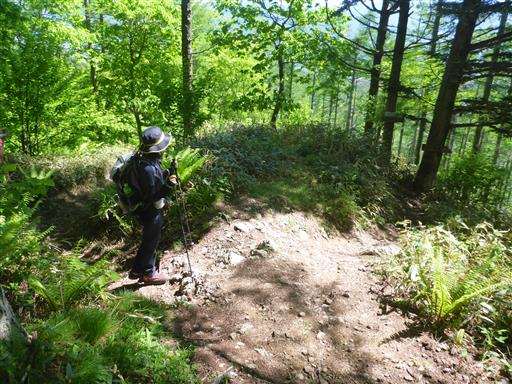
分岐点から少し歩くと樹林帯が消えて守屋山東峰の山頂部が見えてくる。
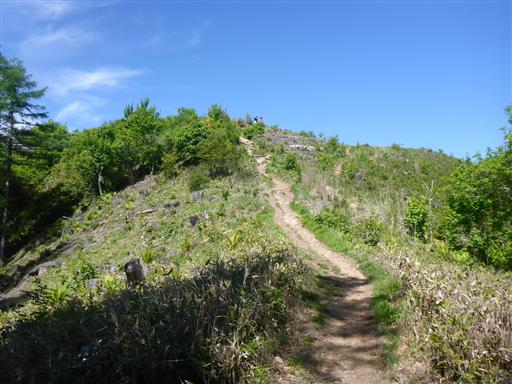
守屋山東峰に到着。ここは絶好の展望台。
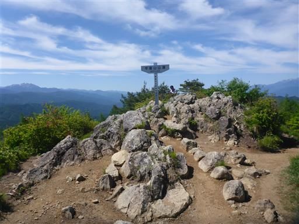
南アルプスの山々。左から甲斐駒ヶ岳、北岳、仙丈ヶ岳。
その右には塩見、悪沢、赤石などが見えていそうだ。
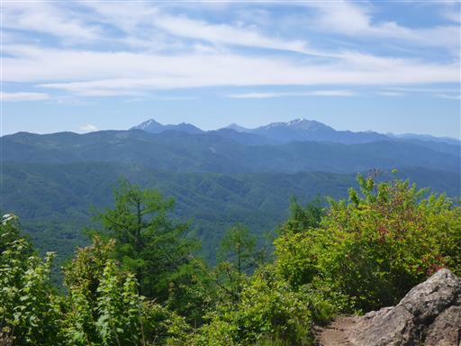
北アルプス。穂高岳と槍ヶ岳。
小さくて山座同定は難しいが、その右には白馬の方までずらっと見えている。
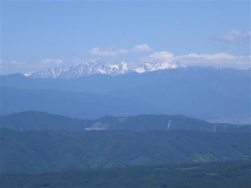
乗鞍岳も頭が見えている。御嶽山は前の山が邪魔で見えない。
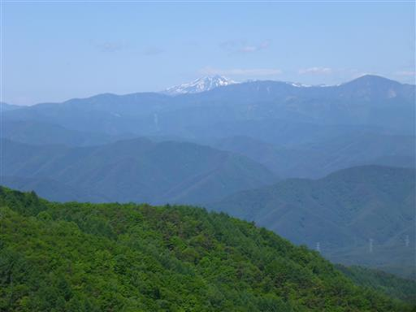
中央アルプスが意外な近さで聳えている。
三大アルプスが一望のもとだ。
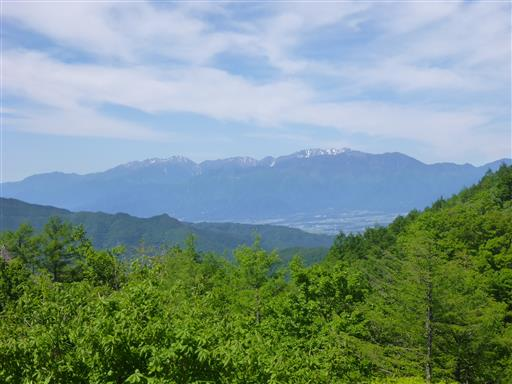
そして八ヶ岳。蓼科山～赤岳～編笠山まで横一線だ。
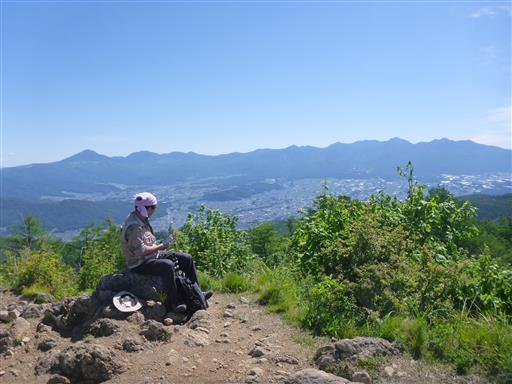
眼下には諏訪湖。霧ヶ峰や美ヶ原も見えている。
入笠山を越える展望の良さだ。こんなに展望の良い山は久しぶり。
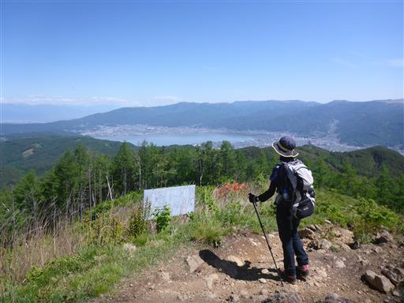
絶景を堪能したら西峰に向かう。少し歩いたら小さな社が見つかる。
なぜか手作りの弓が奉納されている。
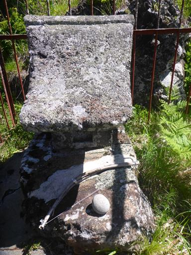
祠の側のレンゲツツジ。鮮やかな朱色だ。

林床に広がる植物。モミジのような葉だがちょっと種類が異なりそうだ。
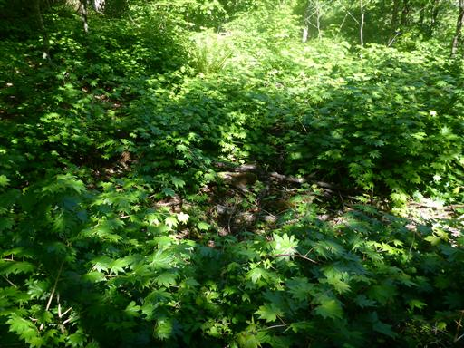
元気になる木。多くの幹に分かれている珍しい形のブナの大木だ。
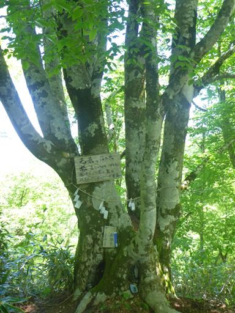
木の根元には仏が祀られている。

カモシカ岩。側の解説板によると、よくカモシカが立つようだ。
この場所がお気に入りの特定の固体なのだろうか？
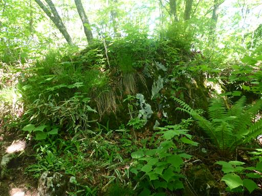
西峰が近づいてきた。山頂直下に建つラビットハウス。
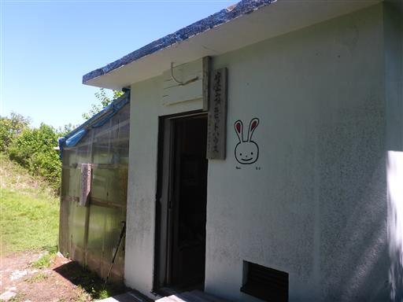
中を覗いてみる。ものすごく狭いが休憩できるようになっている。
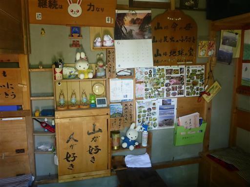
ネットで囲まれた植物栽培場所。
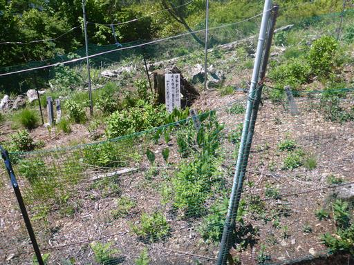
オダマキの花が咲いている。
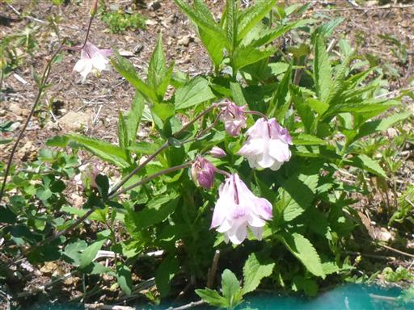
こちらの綿毛は何の植物だろう？
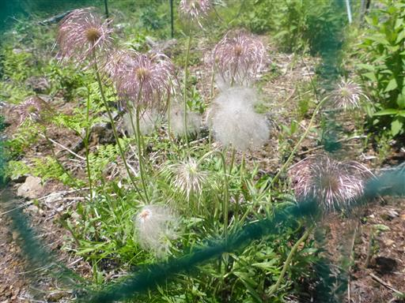
守屋山西峰に到着。標高1651m。こちらの方が標高が高い。
東峰に負けずこちらも絶景が広がる。まだ10時だが、ここで昼食をとることにする。
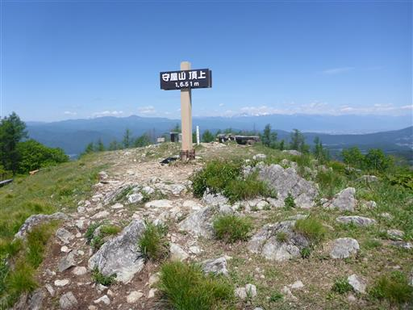
こちらの山頂にはベンチがあるためゆっくりできる。
見事な快晴、見事な展望だ。
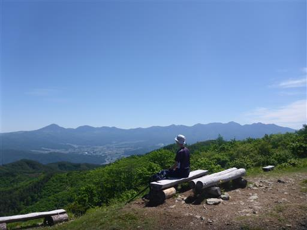
東峰からは見えなかった御岳山が顔を出す。
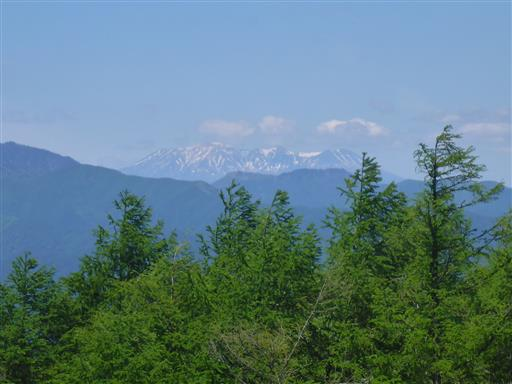
昼食を取ってゆっくりしていたら、多くの登山者が山頂に集まってくる。
登りのときに多くの登山者とすれ違ったが、朝早い組だけでなく、
昼になっても続々と登山者が登ってくる。
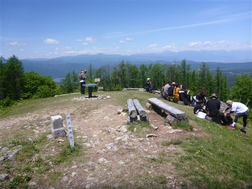
1時間ゆっくり休憩をしたら下山を開始する。
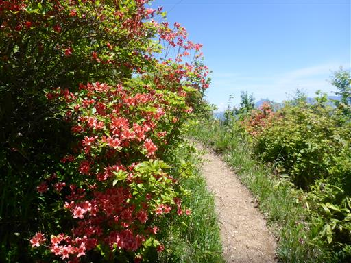
ハルゼミを発見。あまりじっとしておらず、歩き回っている。
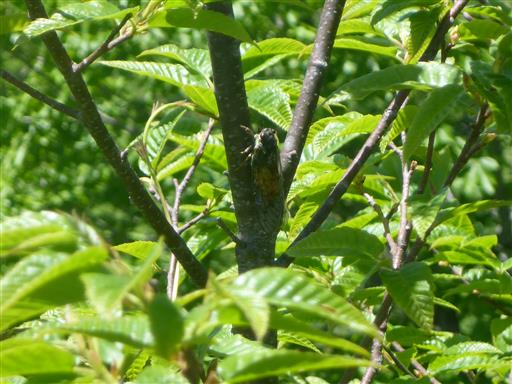
東峰を経由し分岐点まで戻ってきたら、右手の道を行く。
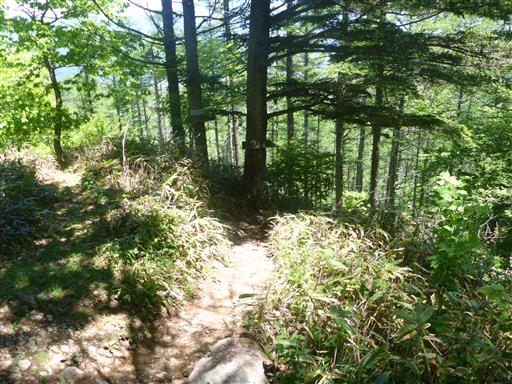
立派なシダ。まるで壺のようだ。
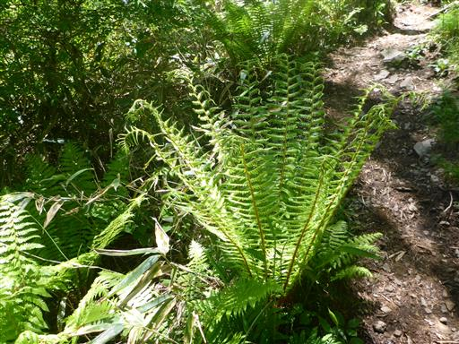
なぜか目が×のテルテルぼうずが吊るされている。

林床は一面シダだ。
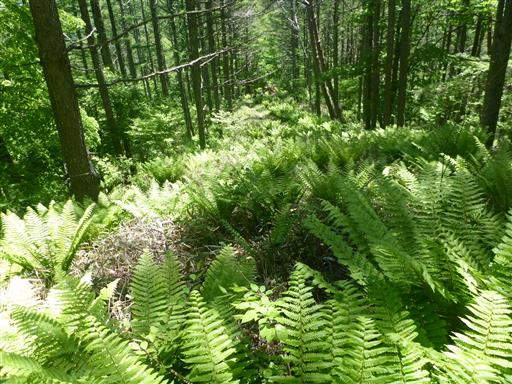
登山道から少し外れて前嶽に寄り道する。こちらは展望0だ。
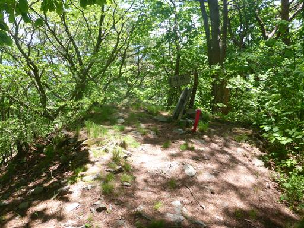
浅間の滝。意外に立派な滝だと話していたら、
側の人から、先日の雨の影響であって普段はほとんど水がない、と教えてもらった。
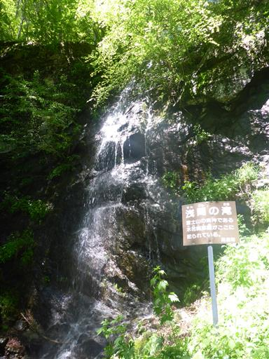
続いて百畳岩。小さなハシゴで岩の上に登ることができる。
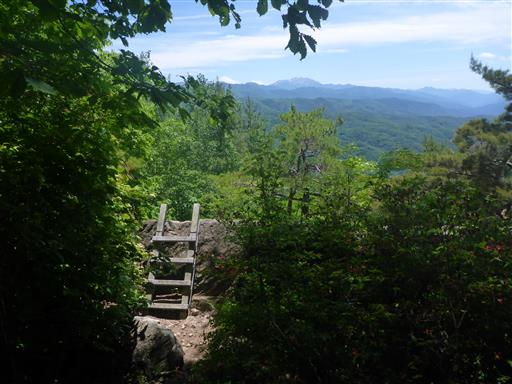
岩の上。特に何の変哲もない岩だが周囲は断崖だ。
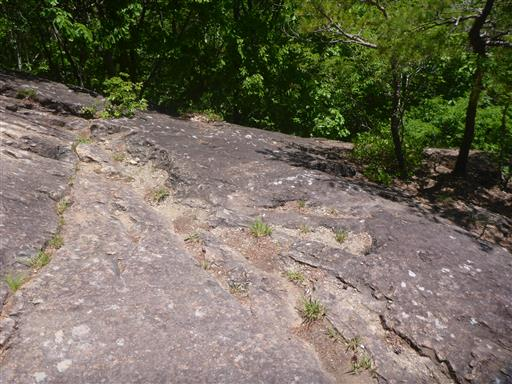
南アルプスの素晴らしい展望が広がるが、山頂からの展望よりは劣る。
だいぶ下ったので、手前にある仙丈ヶ岳以外の山はもうほとんど見えない。
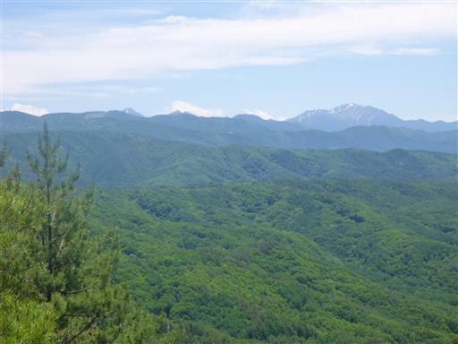
もう少し下って鬼ヶ城に到着。
大きな岩の庇で、昔ここに鬼神が住んでいたと言われる。
この岩って先ほどの百畳岩の下部なのでは？という疑問が生じたが、
面倒なので確認まではしなかった。
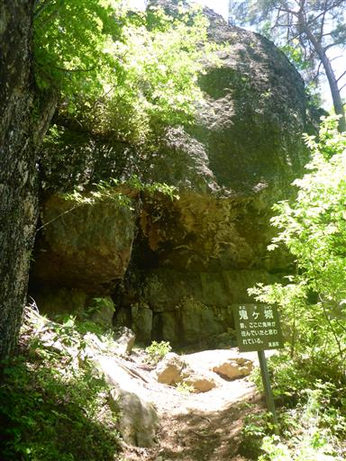
平成のビーナス。確かに女体に見える。
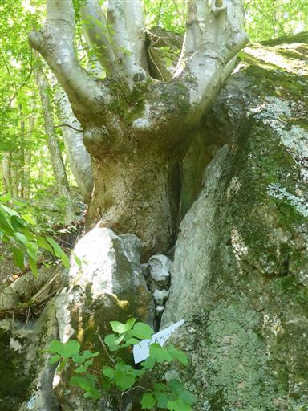
十文字岩。十字に割れ目が入っている。
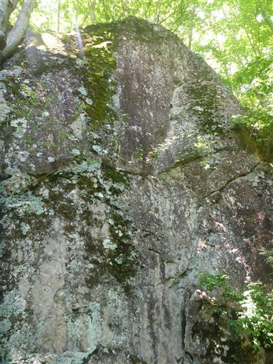
立石。登ったら展望が広がりそうだが、岩がボロボロそうなので自重。
亀石。頭と甲羅の位置関係がちょっと今一。
下山。
下山地点に車があったが、林道は荒れていて道がデコボコだ。
大きな通りに出てくる。
ここからは車道歩き。そこそこ車が通る。そして若干の登り。
右手に小さな池が見える。
15分ほどの車道歩きで駐車場に戻ってくる。
駐車場から少し走ったところにある展望喫茶でお土産を購入してから帰宅する。
守屋山は思った以上に素晴らしい展望で、思った以上に楽ちんな山だった。
それほどメジャーな山ではないと思うが、多くの登山者が集まる理由がよく分かった。
展望以外にも、新緑、ハルゼミ、そして下山中の岩巡りと、非常に楽しい登山だった。